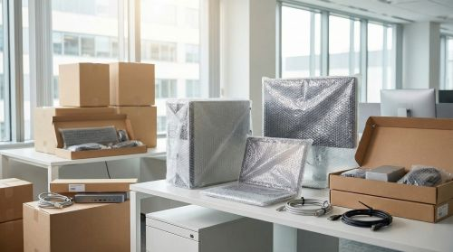

At Varshini Packers & Movers, we understand that office relocation is a critical process that requires careful planning, precision, and minimal downtime. Moving an office is not just about transporting furniture and equipment—it involves shifting your entire business operations, important documents, IT infrastructure, and workplace setup. That is why we offer professional office relocation services designed to ensure a smooth, efficient, and disruption-free transition. Our goal is to help your business resume operations as quickly as possible without affecting productivity.
Our experienced team specializes in handling all aspects of office shifting with professionalism and care. We begin by understanding your business requirements, timelines, and specific needs to create a customized relocation plan. Whether you are moving a small office or a large corporate setup, we ensure every detail is managed systematically. From dismantling office furniture and packing sensitive equipment to labeling files and organizing assets, we follow a structured approach to maintain order throughout the process.
We use high-quality packing materials and advanced packing techniques to protect all items, including computers, servers, printers, and confidential documents. Our trained professionals handle fragile and high-value equipment with extra care, ensuring there is no damage during the move. Proper labeling and inventory management allow for easy identification and quick setup at the new location. This organized process saves time and helps avoid confusion during unpacking and rearrangement.
Transportation is carried out using well-maintained vehicles equipped to handle office goods safely. We ensure secure loading and unloading practices, minimizing the risk of damage or loss. Timely delivery is a key part of our service because we understand that delays can impact your business operations. Our team works efficiently to complete the relocation within the agreed schedule, ensuring your office is ready to function as soon as possible.
One of the biggest challenges in office relocation is minimizing downtime, and we focus strongly on achieving that. Our team coordinates closely with your staff to plan the move in a way that reduces disruption to your daily workflow. We can also offer flexible scheduling, including weekend or after-hours relocation, to ensure your business continues running smoothly. Once the items reach the new location, we assist with unpacking, reassembling furniture, and setting up workspaces so your employees can get back to work quickly.
Transparency and trust are at the core of our services. We provide clear pricing with no hidden charges, allowing you to plan your relocation budget confidently. Our customer support team remains available throughout the process to address any concerns and provide updates, ensuring complete peace of mind.
Choosing Varshini Packers & Movers for your office relocation means partnering with a team that values professionalism, efficiency, and reliability. We are committed to delivering a seamless moving experience that supports your business growth. With our expertise and attention to detail, you can trust us to handle your office relocation with care, precision, and complete responsibility.
At Varshini Packers & Movers, we specialize in providing safe,
reliable, and hassle-free relocation services across India.
With years of experience and a strong commitment to customer satisfaction.
No.3/10, Elupidari Amman Koil ST,
Karambakkam, Porur,
Chennai, Tiruvallur
Tamil Nadu-600116.
Mobile.no: 8939180119
Send Mail : Varshinipackers1996@gmail.com